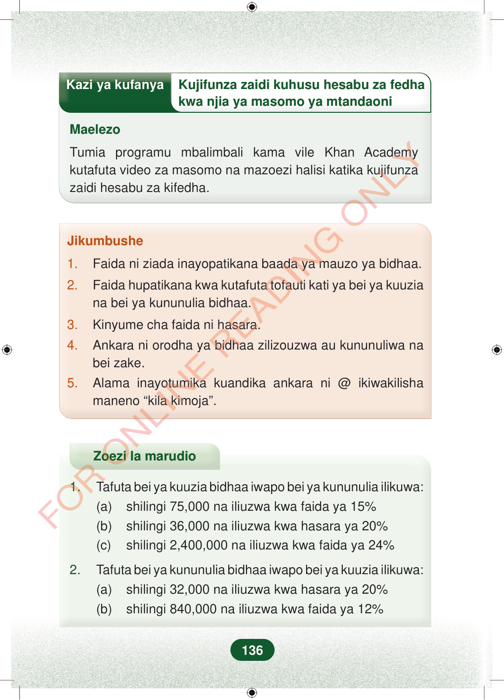

Kazi ya kufanyaKujifunza zaidi kuhusu hesabu za fedhakwa njia ya masomo ya mtandaoniMaelezoTumia programu mbalimbali kama vile Khan Academykutafuta video za masomo na mazoezi halisi katika kujifunzazaidi hesabu za kifedha.Jikumbushe1.Faida ni ziada inayopatikana baada ya mauzo ya bidhaa.2.Faida hupatikana kwa kutafuta tofauti kati ya bei ya kuuziana bei ya kununulia bidhaa.3.Kinyume cha faida ni hasara.4.Ankara ni orodha ya bidhaa zilizouzwa au kununuliwa nabei zake.5.Alama inayotumika kuandika ankara ni @ ikiwakilishamaneno “kila kimoja”.Zoezi la marudio1.Tafuta bei ya kuuzia bidhaa iwapo bei ya kununulia ilikuwa:(a)shilingi 75,000 na iliuzwa kwa faida ya 15%(b)shilingi 36,000 na iliuzwa kwa hasara ya 20%(c)shilingi 2,400,000 na iliuzwa kwa faida ya 24%2.Tafuta bei ya kununulia bidhaa iwapo bei ya kuuzia ilikuwa:(a)shilingi 32,000 na iliuzwa kwa hasara ya 20%(b)shilingi 840,000 na iliuzwa kwa faida ya 12%136
Kazi ya kufanya Kujifunza zaidi kuhusu hesabu za fedha
kwa njia ya masomo ya mtandaoni
Maelezo
Tumia programu mbalimbali kama vile Khan Academy kutafuta video za masomo na mazoezi halisi katika kujifunza zaidi hesabu za kifedha.
Jikumbushe
1. Faida ni ziada inayopatikana baada ya mauzo ya bidhaa.
2. Faida hupatikana kwa kutafuta tofauti kati ya bei ya kuuzia na bei ya kununulia bidhaa.
3. Kinyume cha faida ni hasara.
4. Ankara ni orodha ya bidhaa zilizouzwa au kununuliwa na bei zake.
5. Alama inayotumika kuandika ankara ni @ ikiwakilisha maneno “kila kimoja”.
Zoezi la marudio
1. Tafuta bei ya kuuzia bidhaa iwapo bei ya kununulia ilikuwa: (a) shilingi 75,000 na iliuzwa kwa faida ya 15% (b) shilingi 36,000 na iliuzwa kwa hasara ya 20% (c) shilingi 2,400,000 na iliuzwa kwa faida ya 24%
2. Tafuta bei ya kununulia bidhaa iwapo bei ya kuuzia ilikuwa: (a) shilingi 32,000 na iliuzwa kwa hasara ya 20% (b) shilingi 840,000 na iliuzwa kwa faida ya 12%
136
Kazi ya kufanya kuhusu kujifunza zaidi hesabu za fedha kwa njia ya masomo ya mtandaoni. Maelezo yanaelekeza kutumia programu kama Khan Academy kutafuta video na mazoezi halisi.Kazi ya kufanyaKujifunza zaidi kuhusu hesabu za fedha kwa njia ya masomo ya mtandaoniMaelezoTumia programu mbalimbali kama vile Khan Academy kutafuta video za masomo na mazoezi halisi katika kujifunza zaidi hesabu za kifedha.Sehemu ya Jikumbushe yenye mambo muhimu kuhusu faida, hasara na ankara. Inaeleza kuwa faida ni ziada baada ya mauzo, hasara ni kinyume cha faida, na alama @ humaanisha kila kimoja.Jikumbushe1.Faida ni ziada inayopatikana baada ya mauzo ya bidhaa.2.Faida hupatikana kwa kutafuta tofauti kati ya bei ya kuuzia na bei ya kununulia bidhaa.3.Kinyume cha faida ni hasara.4.Ankara ni orodha ya bidhaa zilizouzwa au kununuliwa na bei zake.5.Alama inayotumika kuandika ankara ni @ ikiwakilisha maneno “kila kimoja”.Zoezi la marudio lenye maswali ya kutafuta bei ya kuuzia na bei ya kununulia bidhaa. Maswali yanatumia kiasi cha shilingi pamoja na faida au hasara kwa asilimia.Zoezi la marudio1.Tafuta bei ya kuuzia bidhaa iwapo bei ya kununulia ilikuwa:(a)shilingi 75,000 na iliuziwa kwa faida ya 15%(b)shilingi 36,000 na iliuziwa kwa hasara ya 20%(c)shilingi 2,400,000 na iliuziwa kwa faida ya 24%2.Tafuta bei ya kununulia bidhaa iwapo bei ya kuuzia ilikuwa:(a)shilingi 32,000 na iliuziwa kwa hasara ya 20%(b)shilingi 840,000 na iliuziwa kwa faida ya 12%